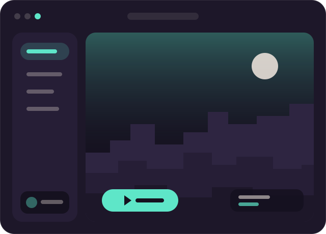

Світло й небо
Готові пресети освітлення, м'які тіні й живе небо — без ручного налаштування шейдерів.
Лаунчер і візуальний мод в одному. Красиве освітлення, плавні анімації та чистий інтерфейс — запускай і грай, без ручного налаштування модів.

Усе, що робить гру красивішою, вже зібрано в клієнті. Ось лише кілька фішок.
Готові пресети освітлення, м'які тіні й живе небо — без ручного налаштування шейдерів.
Плавні удари, ефекти й анімації рук — гра відчувається живішою.
Мінімалістичний HUD і меню з округлими формами, які не заважають грі.
Один файл — встанови його, як звичайну програму.
Використай свій ліцензійний акаунт Minecraft Java Edition.
Fabric і візуальний мод підтягнуться автоматично.
Базова версія безкоштовна. Преміум відкриває додаткові ефекти й космітику.